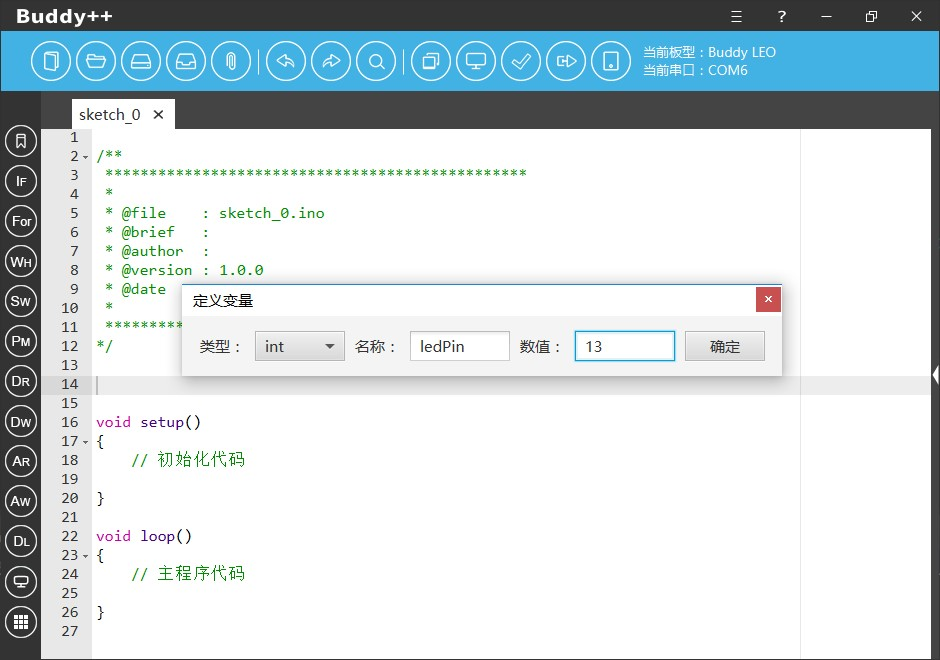
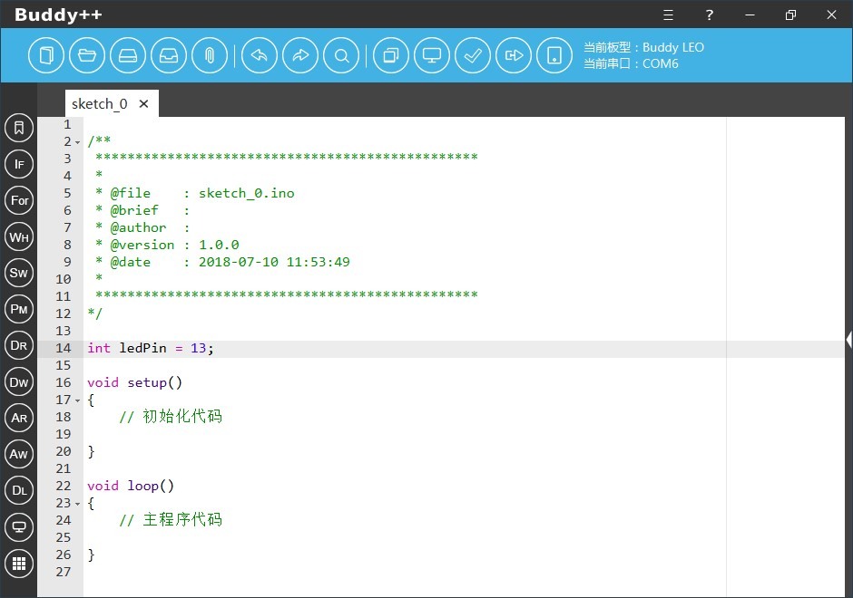

Buddy++与Arduino官方IDE相比最大的特色是加入了交互式编程的机制，以往我们使用Arduino官方的IDE进行开发时使用的只能使用简陋的编辑器，语法高亮不完善，也没有代码提示，这对于零基础入门的开发者来说十分头疼，我们在Buddy++中加入了人性化的交互式编程机制，开发者可以通过窗口设置的方式生成模板代码，无需牢记枯燥的各式关键词、数据类型和语法结构。
变量的应用是在程序设计的过程中最为基础的部分，以往对于初学者来说其首先需要掌握开发语言所支持的数据类型，接着是变量应用的相关语法，例如是变量的定义，变量的赋值，变量的运算等等。


为了降低初学者的门开，Buddy++为开发者提供了变量定义与初始化辅助工具，开发者可以通过下拉菜单的方式选择指定的数据类型，也可以通过工具对变量进行赋值。这样初学者就可以在未牢记数据类型和变量应用语法的前提下开始编码。